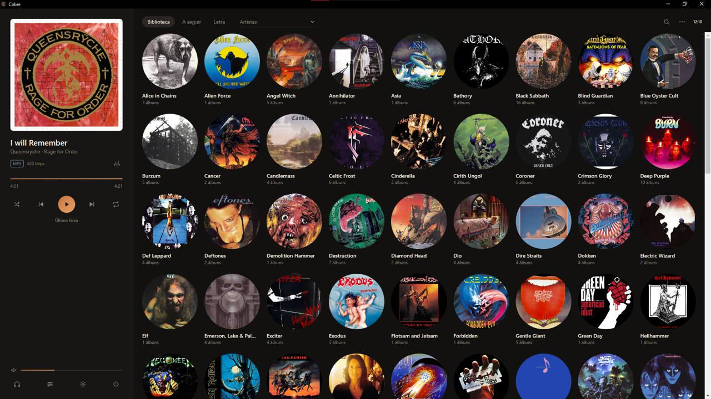

LADO A · PLAYER DE MÚSICA LOCAL
Sua música, do seu jeito, no seu PC.
Cobre é um player para Windows que toca os arquivos da sua biblioteca local, com capas em destaque, letras, equalizador e visualizações.
Desktop para Windows · versão de instalação em breve
FAIXA 02 · SOBRE
Uma biblioteca que parece uma estante de discos.
O Cobre lê os metadados dos seus arquivos e organiza tudo em álbuns, artistas e gêneros, em uma grade de capas circulares. Escolha uma pasta e comece a ouvir.

Captura real do Cobre Desktop, com a biblioteca de um usuário.
FAIXA 03 · RECURSOS
O que o Cobre Desktop já faz.
A agulha desceu. Continue rolando: cada faixa deste disco é um recurso.
FAIXA 04 · BIBLIOTECA
Álbuns, artistas, gêneros e mais
A biblioteca é montada a partir dos metadados dos seus arquivos.
- Visões: álbuns, artistas, gêneros, playlists e faixas
- Ordenação por artista, ano ou título
- Busca e botão de álbum aleatório
- Mais ouvidos do mês (álbuns e faixas)
FAIXA 05 · CAPAS
Capas que fazem parte da experiência
Mostra a capa embutida nos arquivos e, quando falta, pode buscá-las online.
- Grade de capas circulares
- Busca de capas ausentes em serviços online
- Opção de restaurar capas
FAIXA 06 · LETRAS
Letras enquanto você ouve
Lê letras de arquivos .lrc ou .txt ao lado da música e também consegue buscá-las online.
- Arquivos .lrc e .txt locais
- Busca online (LRCLIB)
- Letras também no modo cinema
FAIXA 07 · ÁUDIO
Equalizador e transições
Controles de áudio para moldar o som.
- Equalizador
- Transição entre faixas: normal, gapless ou crossfade
- Efeito “Valvulado” (calor suave, sem distorção)
- Escolha da saída de áudio
FAIXA 08 · VISUAL
Visualizações e modo cinema
Troque a capa por uma visualização e deixe a tela cheia para curtir.
- Visualizações alternáveis, incluindo Válvulas
- Ajustes de vinil
- Modo cinema e tela cheia
- Barra de tempo em linha, onda ou disco
FAIXA 09 · EXTRAS
Detalhes que ajudam no dia a dia
Pequenos recursos além de tocar.
- Mini player sempre visível
- Ranking de álbuns (tier list)
- Last.fm opcional (scrobble)
- Acesso remoto na rede local
FAIXA 10 · COMO FUNCIONA
Como funciona
Sem conta e sem nuvem para tocar a sua coleção: o Cobre usa os arquivos que já estão no seu computador.
FAIXA 11 · FIM DO LADO A
Downloads
Os links de instalação aparecerão aqui quando as versões forem publicadas.
Cobre Desktop
Windows. O app já funciona; o instalador público ainda não foi publicado.
Cobre Mobile
Versão para Android, em desenvolvimento em paralelo ao Desktop.
Cobre TV
Ainda é um plano. Sem data e sem recursos definidos.
Cobre ID e sincronização
Conta e sincronização completa ainda são planos, não recursos disponíveis.